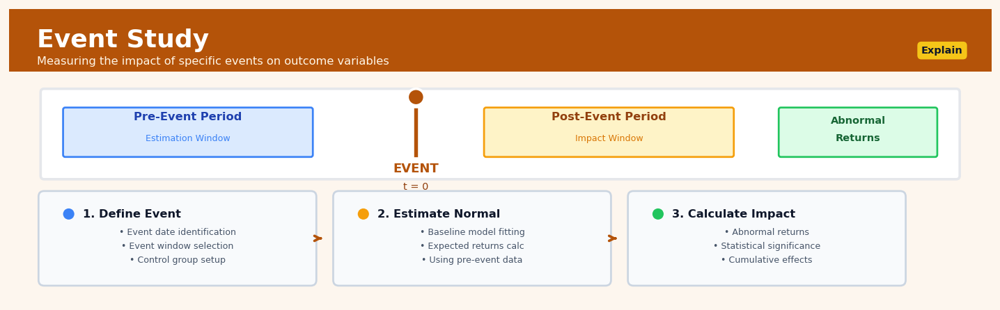

Event Study#


The most common mistake in event studies is contamination of the estimation window with related events or information leakage. Always ensure your pre-event period is truly clean and extends far enough back to capture normal behavior, typically 120-250 days for financial applications. If multiple events cluster together, consider expanding to a portfolio approach rather than treating each event independently, otherwise your standard errors will be severely understated.
The 60-Second Version#
What it does: Event study measures whether a specific moment in time—a product launch, policy change, or market shock—actually caused an observable change in your metrics.
When to use it: You need to prove (or disprove) that something that happened on a known date had a real impact, separating the signal from natural trends and seasonality.
What you get back: A quantified estimate of the event’s effect with statistical confidence bounds, telling you whether to credit (or blame) the event and by how much.
At a Glance
Difficulty |
Moderate |
Typical runtime |
Seconds to minutes on 100K rows |
What you bring |
Time series data before and after a known event date |
What you get |
Estimated causal effect size and confidence interval |
Heuristix bucket |
Explain — Causal Analysis & Interpretation |
Event studies require a clear event date and stable pre-event patterns—without these foundations, you’re measuring noise, not causality.
Learning Objectives#
After reading this chapter, a business user will be able to:
Identify situations where Event Study methodology applies, such as measuring the impact of product launches, policy changes, marketing campaigns, or operational disruptions on business metrics.
Interpret event study visualizations and statistical outputs to explain to stakeholders whether an event had a significant impact, how large that impact was, and how long it persisted.
Decide whether to scale, modify, or discontinue an intervention based on event study results, including distinguishing between temporary effects and sustained changes in business outcomes.
After reading this chapter, a data scientist will be able to:
Implement an event study analysis from start to finish, including selecting appropriate control groups, constructing counterfactual predictions, and handling complications like multiple events, staggered rollouts, and missing data.
Configure critical methodological choices—such as pre-event window length, synthetic control weights, and significance testing approaches—while understanding how each choice affects statistical power and validity.
Diagnose when event study results are unreliable by checking for violations of parallel trends, anticipation effects, spillover contamination, and insufficient statistical power, then apply appropriate remedies or alternative methods.
Overview#
Event study methodology is a quasi-experimental technique that quantifies the causal impact of a discrete event on an outcome of interest by comparing observed outcomes to a counterfactual prediction of what would have occurred absent the event. The method belongs to the family of difference-based causal inference approaches, closely related to interrupted time series analysis and regression discontinuity designs, and serves as a cornerstone of empirical research in finance, economics, and policy evaluation. At its core, an event study exploits the temporal discontinuity created by an event to isolate its effect from underlying trends and confounding factors.
When to Use This#
Measuring the impact of regulatory announcements: When a new regulation is announced or implemented, use event studies to quantify immediate market reactions or behavioural shifts, distinguishing the policy effect from secular trends.
Assessing marketing campaign effectiveness: When a major campaign launches on a specific date across all markets simultaneously, measure the incremental lift in sales or engagement attributable to the campaign.
Evaluating corporate actions on stock prices: When companies announce mergers, earnings surprises, or executive changes, quantify the abnormal returns attributable to the announcement rather than general market movements.
Measuring the effect of system outages or service disruptions: When an unexpected outage occurs, estimate the causal impact on customer behaviour, revenue, or operational metrics during and after the disruption period.
Policy intervention analysis: When governments implement policy changes (tax reforms, minimum wage increases, trade tariffs), estimate the immediate and sustained effects on relevant economic indicators.
Product launch or feature release impact: When new products or features are released on a known date, separate the effect of the launch from seasonal patterns and ongoing growth trends.
Do NOT use this when events are anticipated and priced in gradually: If markets or agents can anticipate the event, effects will be spread over time before the event date, violating the sharp discontinuity assumption.
Do NOT use this when the event timing is endogenous: If the event occurs in response to the outcome variable (e.g., an intervention triggered by declining performance), causal identification fails due to reverse causality.
Do NOT use this when confounding events coincide: If multiple events occur simultaneously or the event window overlaps with other significant changes, isolating the specific event effect becomes impossible.
Do NOT use this when insufficient pre-event data exists: Without adequate historical data to establish the counterfactual baseline, the event study cannot reliably estimate what would have occurred absent the event.
Questions This Answers#
Measuring Impact of Major Changes#
Did our rebranding campaign in March actually increase sales, or would they have gone up anyway?
What was the real impact of that product recall on our stock price versus normal market movements?
When we launched same-day delivery in the Northeast, did it actually boost conversion rates or just shift timing of purchases?
How much revenue did we lose during the two-week system outage, accounting for seasonal trends?
Did the regulatory change in Q2 hurt our market share, or were we already losing ground to competitors?
Evaluating Strategic Decisions#
Should we expand our store hours nationwide based on what happened when we tested it in 50 locations?
Was acquiring that competitor worth the $200M premium we paid — can we see the impact on our customer base yet?
Did moving our customer service offshore actually save money when you factor in the hit to satisfaction scores?
Which had a bigger impact on employee retention — the salary increase in January or the new benefits package in April?
If we’d announced the CEO transition differently, could we have avoided that 12% stock drop?
Understanding External Events#
How much did that data breach at our competitor benefit our subscriber growth last quarter?
When the tariffs hit in September, were we affected more or less than our industry peers?
Did that viral social media crisis actually hurt foot traffic, or are people just complaining online without changing behavior?
How long did it take for customer sentiment to recover after the pricing controversy — are we back to baseline yet?
How It Works#
Imagine you’re managing a coffee shop, and you’ve been tracking daily sales for months. One day, a new office building opens across the street. Your sales immediately jump. But here’s the question: how much of that increase is really from the office building, versus just normal fluctuations or the fact that summer started around the same time? Event study methodology answers this by looking at your sales trend before the office opened, projecting what would have happened if it never opened, and comparing that imaginary “business as usual” scenario to what actually occurred. The difference between reality and that projection is the true effect of the new office building.
TIMELINE VIEW OF EVENT STUDY
Before Event │ After Event
(Estimation) │ (Evaluation)
▼
Sales │
↑ ×××│××× ← Actual outcome
│ ×× │ ××××
│ ×× │ ×××
│ ×× │ ×
│ ×× │ ┌─────┐
│× │ │IMPACT│ ← The causal effect
× │ └─────┘
× ───┼─────────────── ← Counterfactual
× ─── │ (predicted trend)
× ──── │
× ──── │
────────────────────────────────→ Time
^ ^
│ │
Start Event Date
Observation (e.g., new policy,
product launch)
Step 1: Define the event and timeline. First, you identify the specific moment when something changed—a policy announcement, a product launch, a corporate merger. You mark this as your event date on the calendar. Everything before this date becomes your “training period” where you can observe normal patterns. Everything after becomes your “evaluation period” where you’ll measure the impact.
Step 2: Establish the pre-event baseline. During the period before the event, you study how your outcome variable behaves naturally. Maybe sales trend upward every spring, or stock prices follow the overall market. You’re learning the rhythm and patterns of normal life—what would typically happen without any special intervention.
Step 3: Build the counterfactual prediction. Using those pre-event patterns, you project forward: “If the event had never happened, here’s what we’d expect to see.” This is your counterfactual—the alternate reality timeline. You might use historical trends, seasonal patterns, or compare to similar units that didn’t experience the event (like a competitor’s coffee shop that doesn’t have a new office building nearby).
Step 4: Measure actual outcomes after the event. Now you simply observe what really happens in the post-event period. You collect the same data you were tracking before—sales, stock prices, customer visits, whatever you’re studying.
Step 5: Calculate the gap. For each time point after the event, you subtract your counterfactual prediction from the actual observed outcome. If actual sales are higher than predicted, that gap represents the event’s positive impact. If they’re lower, the event may have caused harm. This gap, measured over time, is your event study estimate.
Step 6: Assess significance and persistence. Finally, you examine whether the impact is real (statistically meaningful, not just random noise) and whether it’s temporary or lasting. Does the effect fade over weeks, or does it represent a permanent shift?
The key insight: Event study works because it explicitly constructs the “what if nothing happened” scenario, allowing you to isolate the pure effect of a single event from all the other factors constantly influencing your outcome.
The Intuition#
Imagine you are monitoring your home’s electricity consumption and want to know whether installing solar panels actually reduced your grid usage. You have months of daily consumption data before the installation, and you understand how factors like temperature, day of week, and occupancy affect your usage. The fundamental question is: after the panels were installed, how does your actual consumption compare to what it would have been without the panels?
The event study approach constructs this counterfactual by learning the relationships between your consumption and its predictors during the pre-installation period. This learned model is then projected forward into the post-installation period to generate predicted consumption as if the panels were never installed. The difference between this prediction and your actual consumption represents the causal effect of the solar installation. The key insight is that by establishing a stable relationship during the “normal” period, we can detect deviations from normality that are attributable to the event.
This approach works because the event creates a clean temporal discontinuity—there is a precise moment when the world changes from “before” to “after.” Everything we know about the pre-event relationship between the outcome and its drivers should continue to hold after the event, except for the direct effect of the event itself. When we observe systematic deviations from our predictions in the post-event period, and those deviations cannot be explained by the factors we controlled for, we attribute them to the event. The credibility of this attribution depends critically on having a good model of the counterfactual and on the event being truly exogenous—occurring for reasons unrelated to the outcome we are measuring.
The power of the event study lies in its ability to control for factors that would otherwise confound our estimate. In the financial markets context, a company’s stock price is affected by countless factors: overall market movements, sector-specific trends, interest rates, and idiosyncratic firm news. Without controlling for these factors, we might attribute a price change to a specific announcement when it was actually driven by a market-wide rally. By modelling the normal relationship between the stock and these factors, the event study isolates the “abnormal” return that can be credibly attributed to the event of interest.
The Mathematics#
Problem Setup and Notation#
Let \(Y_t\) denote the outcome of interest observed at time \(t\). We observe a time series \(\{Y_t\}_{t=1}^{T}\) where the event occurs at time \(\tau\). The pre-event period is \(t \in [1, \tau - 1]\), the event window is \(t \in [\tau, \tau + k]\) for some window length \(k\), and any post-event period extends beyond.
We posit that in the absence of the event, the outcome follows:
where \(X_t\) is a vector of explanatory variables, \(\beta\) is a parameter vector, and \(\varepsilon_t\) is a mean-zero error term with \(\mathbb{E}[\varepsilon_t | X_t] = 0\).
The abnormal outcome at time \(t\) in the event window is defined as:
where \(\hat{Y}_t = f(X_t; \hat{\beta})\) is the predicted outcome using parameters estimated from the pre-event period.
The Market Model (Financial Applications)#
In the canonical financial event study, the market model specifies:
where \(R_{it}\) is the return on security \(i\) at time \(t\), \(R_{mt}\) is the return on the market portfolio, \(\alpha_i\) captures the security’s average return not explained by market movements, and \(\beta_i\) measures the security’s sensitivity to market returns.
The abnormal return is:
where \(\hat{\alpha}_i\) and \(\hat{\beta}_i\) are OLS estimates from the estimation window.
Estimation Procedure#
Step 1: Estimation Window Selection
Define the estimation window as \([T_0, T_1]\) where \(T_1 < \tau\). A common choice is 120-250 trading days ending 10-30 days before the event.
Step 2: Parameter Estimation
Using OLS on the estimation window:
where \(X\) and \(Y\) contain observations from the estimation window only.
Step 3: Abnormal Outcome Calculation
For each \(t\) in the event window \([\tau - k_1, \tau + k_2]\):
Step 4: Cumulative Abnormal Outcome
The cumulative abnormal outcome (CAO) over a window \([t_1, t_2]\) is:
Statistical Inference#
Under the null hypothesis of no event effect, \(AR_t \sim N(0, \sigma^2_{AR_t})\).
The variance of the abnormal return incorporates estimation error:
where \(T = T_1 - T_0 + 1\) is the estimation window length and \(\sigma^2_\varepsilon\) is estimated from the residual variance.
The test statistic for a single abnormal return is:
For cumulative abnormal outcomes:
under the assumption of serially uncorrelated abnormal returns.
Cross-Sectional Aggregation#
When studying \(N\) entities experiencing similar events:
The cross-sectional test statistic:
Assumptions#
Exogeneity of event timing: The event occurrence must be uncorrelated with \(\varepsilon_t\). Formally, \(\mathbb{E}[\varepsilon_t | \text{event at } \tau] = 0\).
Stability of the data generating process: The parameters \(\beta\) estimated in the pre-event period remain valid in the event window absent the event.
No anticipation effects: The event effect begins precisely at \(\tau\), not before.
No confounding events: No other events systematically affect the outcome during the event window.
Correct model specification: The functional form \(f(\cdot)\) correctly captures the relationship between \(Y_t\) and \(X_t\).
Alternative Models#
Constant Mean Return Model:
Simple but fails to control for systematic factors.
Multi-Factor Model:
where \(F_{jt}\) are factor returns (e.g., Fama-French factors).
Difference-in-Differences Variant:
where \(\delta\) captures the treatment effect.
Edge Cases#
Thin trading: When outcomes are observed infrequently, returns may be biased and standard errors underestimated. Solutions include trade-to-trade returns or Scholes-Williams adjustments.
Event clustering: When events cluster in calendar time, cross-sectional correlation inflates test statistics. Robust standard errors or calendar-time portfolio approaches address this.
Long event windows: As the event window lengthens, the assumption of parameter stability becomes increasingly tenuous, and cumulative test statistics lose power.
Understanding the Mathematics#
The Abnormal Return#
The equation: $\(AR_{i,t} = R_{i,t} - E[R_{i,t}]\)$
Read it aloud: The abnormal return for asset \(i\) at time \(t\) equals the actual return we observed, minus the return we expected to see if the event hadn’t happened.
What each symbol means:
\(AR_{i,t}\) = Abnormal return (the effect we’re measuring)
\(R_{i,t}\) = Actual observed return for asset \(i\) at time \(t\)
\(E[R_{i,t}]\) = Expected return (our counterfactual prediction)
The minus sign = How far reality deviated from our prediction
A concrete numerical example: A company announces a major product recall on March 15th. That day, its stock return is -8.2%. Based on historical patterns and market conditions, we predicted the stock would return +1.5% that day. The abnormal return = -8.2% - 1.5% = -9.7%. This -9.7% represents the recall’s impact.
Why this equation matters: Without comparing actual to expected returns, we’d mistake normal market movements for event effects—attributing routine volatility to our event when nothing special actually happened.
The Market Model for Expected Returns#
The equation: $\(E[R_{i,t}] = \hat{\alpha}_i + \hat{\beta}_i R_{m,t}\)$
Read it aloud: The expected return for asset \(i\) at time \(t\) equals a baseline return specific to that asset, plus its sensitivity to the market multiplied by how the overall market performed.
What each symbol means:
\(E[R_{i,t}]\) = What we predict the return should be
\(\hat{\alpha}_i\) = Asset-specific baseline return (the “intercept”)
\(\hat{\beta}_i\) = Asset’s sensitivity to market movements (estimated from pre-event data)
\(R_{m,t}\) = The broad market’s return at time \(t\)
A concrete numerical example: We estimated that Company X has \(\hat{\alpha}_i = 0.05\%\) (daily) and \(\hat{\beta}_i = 1.3\). On the event day, the S&P 500 returns 2.0%. Expected return = 0.05% + 1.3 × 2.0% = 0.05% + 2.6% = 2.65%. If Company X actually returned -1.0%, the abnormal return would be -1.0% - 2.65% = -3.65%.
Why this equation matters: This isolates the event’s effect from general market conditions—distinguishing whether a stock dropped because of bad company news or because the entire market declined that day.
Cumulative Abnormal Return#
The equation: $\(CAR_{i}(t_1, t_2) = \sum_{t=t_1}^{t_2} AR_{i,t}\)$
Read it aloud: The cumulative abnormal return for asset \(i\) from time \(t_1\) to time \(t_2\) equals the sum of all individual abnormal returns across that window.
What each symbol means:
\(CAR_{i}(t_1, t_2)\) = Total accumulated effect over a time period
\(\sum\) = Summation (add up all the daily effects)
\(t_1\) to \(t_2\) = The event window (e.g., day -1 to day +5)
\(AR_{i,t}\) = Each day’s abnormal return
A concrete numerical example: After a merger announcement, a target company shows daily abnormal returns: Day 0: +12%, Day +1: +3%, Day +2: +1%, Day +3: -0.5%. The CAR(0,+3) = 12% + 3% + 1% + (-0.5%) = 15.5%. The market believes the merger creates 15.5% value over four days.
Why this equation matters: Events rarely impact outcomes in a single instant—effects unfold over time, leak before announcements, or develop as markets digest information, and CAR captures this complete temporal response.
The Big Picture#
The mathematics of event studies solves a fundamental problem: how do we measure something that didn’t happen? We observe reality after the event, but never see the parallel universe where the event didn’t occur. The equations build a defensible counterfactual by learning the asset’s normal relationship with the market from pre-event data, then projecting that relationship forward to predict what should have happened. The difference between prediction and reality isolates the causal effect. This approach works because it separates systematic factors (captured by market model parameters) from event-specific shocks. In one sentence: event study mathematics constructs a synthetic control from historical patterns, measures deviation from that control at the moment of disruption, then accumulates those deviations to quantify total impact.
Python Implementation#
import numpy as np
import pandas as pd
import statsmodels.api as sm
from scipy import stats
import matplotlib.pyplot as plt
# Set random seed for reproducibility
np.random.seed(42)
# =============================================================================
# Example 1: Single-Entity Event Study (Stock Returns)
# =============================================================================
def generate_stock_data(n_days=300, event_day=250, true_effect=0.05):
"""
Generate synthetic stock return data with a known event effect.
Parameters:
-----------
n_days : int
Total number of trading days
event_day : int
Day on which the event occurs
true_effect : float
True abnormal return on event day
"""
# Market returns: mean 0.05% daily, std 1%
market_returns = np.random.normal(0.0005, 0.01, n_days)
# Stock parameters
alpha = 0.0002 # Stock's alpha (daily)
beta = 1.2 # Stock's market beta
sigma = 0.015 # Idiosyncratic volatility
# Generate stock returns
stock_returns = alpha + beta * market_returns + np.random.normal(0, sigma, n_days)
# Add event effect on event day
stock_returns[event_day] += true_effect
# Create DataFrame
dates = pd.date_range(start='2023-01-01', periods=n_days, freq='B')
df = pd.DataFrame({
'date': dates,
'stock_return': stock_returns,
'market_return': market_returns
})
df['day_index'] = range(n_days)
return df, event_day
# Generate data
df, event_day = generate_stock_data(n_days=300, event_day=250, true_effect=0.05)
# Define estimation window (120 days ending 10 days before event)
estimation_start = event_day - 130
estimation_end = event_day - 11
# Define event window (10 days before to 10 days after)
event_window_start = event_day - 10
event_window_end = min(event_day + 10, len(df) - 1)
# Extract estimation window data
est_data = df[(df['day_index'] >= estimation_start) &
(df['day_index'] <= estimation_end)].copy()
print("=" * 60)
print("SINGLE-ENTITY EVENT STUDY")
print("=" * 60)
print(f"\nEstimation window: days {estimation_start} to {estimation_end}")
print(f"Event window: days {event_window_start} to {event_window_end}")
print(f"Event day: {event_day}")
# Estimate market model using OLS
X_est = sm.add_constant(est_data['market_return'])
y_est = est_data['stock_return']
model = sm.OLS(y_est, X_est).fit()
print("\n--- Market Model Estimation ---")
print(f"Alpha (intercept): {model.params['const']:.6f}")
print(f"Beta (market sensitivity): {model.params['market_return']:.4f}")
print(f"R-squared: {model.rsquared:.4f}")
print(f"Residual std error: {np.sqrt(model.mse_resid):.6f}")
# Calculate abnormal returns in event window
event_data = df[(df['day_index'] >= event_window_start) &
(df['day_index'] <= event_window_end)].copy()
X_event = sm.add_constant(event_data['market_return'])
event_data['predicted_return'] = model.predict(X_event)
event_data['abnormal_return'] = event_data['stock_return'] - event_data['predicted_return']
# Calculate standard error of abnormal returns (incorporating estimation error)
T = len(est_data)
sigma_sq = model.mse_resid
mean_market_est = est_data['market_return'].mean()
var_market_est = est_data['market_return'].var() * (T - 1)
event_data['ar_variance'] = sigma_sq * (
1 + 1/T + (event_data['market_return'] - mean_market_est)**2 / var_market_est
)
event_data['ar_std_error'] = np.sqrt(event_data['ar_variance'])
event_data['t_statistic'] = event_data['abnormal_return'] / event_data['ar_std_error']
event_data['p_value'] = 2 * (1 - stats.t.cdf(np.abs(event_data['t_statistic']), T - 2))
# Calculate cumulative abnormal returns
event_data['cumulative_ar'] = event_data['abnormal_return'].cumsum()
print("\n--- Event Window Abnormal Returns ---")
print(event_data[['day_index', 'stock_return', 'predicted_return',
'abnormal_return', 't_statistic', 'p_value']].to_string(index=False))
# Report key statistics
event_day_ar = event_data[event
## Visualisations


## Using This in Heuristix
### What You'll Need
The Event Study node expects **time series data with a clear event marker**. You'll need:
- **A date/time column** (daily, weekly, or monthly frequency works best)
- **An outcome variable** (the metric you're measuring — stock returns, website traffic, sales, etc.)
- **An event date or event indicator** (either a single date or a binary 0/1 column marking when the event occurred)
Your data should look like this:
**Before connecting:**
| date | daily_revenue | company_id |
|------------|---------------|------------|
| 2024-01-15 | 45000 | ACME |
| 2024-01-16 | 47000 | ACME |
| 2024-01-17 | 46500 | ACME |
**You'll add:** An event indicator showing when your event happened (e.g., a product launch on 2024-01-16).
### Configuration Parameters
| Parameter | What It Controls | Default | When to Change It |
|-----------|------------------|---------|-------------------|
| **Event Date** | The specific date when your event occurred | (required) | Always set this — it's your treatment point |
| **Pre-Event Window** | How many periods before the event to analyze | 30 days | Increase for slow-moving metrics; decrease for volatile ones |
| **Post-Event Window** | How many periods after the event to track | 30 days | Extend to capture delayed effects (e.g., 90 days for policy changes) |
| **Outcome Variable** | Which column contains your metric of interest | (required) | Choose your key performance indicator |
| **Grouping Variable** | Optional: analyze multiple entities separately | None | Use when you have panel data (multiple companies, locations, etc.) |
| **Counterfactual Method** | How to predict "what would have happened" | Linear trend | Switch to "moving average" for seasonal data or "synthetic control" for complex patterns |
| **Confidence Level** | Statistical confidence for significance bands | 95% | Use 90% for exploratory analysis, 99% for high-stakes decisions |
### What You'll Get Back
The node outputs three key components:
**1. Enhanced Dataset** with new columns:
- `event_time`: Days/periods relative to event (e.g., -5, 0, +3)
- `counterfactual`: Predicted value had event not occurred
- `effect`: Difference between observed and counterfactual
- `cumulative_effect`: Running total of impact over time
**2. Visual Outputs:**
- **Event study plot**: Shows actual vs. counterfactual with confidence bands — the gap between lines is your effect
- **Cumulative impact chart**: Tracks total effect accumulation — great for executive summaries
**3. Summary Statistics:**
- Average treatment effect with p-value
- Total cumulative impact
- Time to peak effect
### Quick Start: Measuring a Product Launch Impact
1. **Connect your time series data** to the Event Study node (ensure you have daily metrics and launch date)
2. **Set Event Date** to your product launch date
3. **Choose your Outcome Variable** (e.g., `daily_revenue`)
4. **Set Pre/Post-Event Windows** to 30 days each (adjust if you launched recently)
5. **Select Counterfactual Method**: start with "Linear trend" — if your visualization shows poor pre-event fit, switch to "Moving average"
6. **Run the node** and examine the event study plot first — look for a clear separation between actual and counterfactual lines
7. **Check the p-value** in summary stats — below 0.05 means statistically significant impact
### Connecting Downstream
This node pairs naturally with:
- **Statistical Summary** node: to quantify effect sizes and generate report-ready tables
- **Segmentation** node: to understand which customer groups drove the effect
- **Export** node: to share visualizations with stakeholders
- **Time Series Forecast** node: to project the effect forward
### Pro Tips from the Field
1. **Always visually inspect the pre-event fit** — if your counterfactual doesn't track the actual trend well before the event, your estimate will be biased. Try different counterfactual methods until pre-event lines align closely.
2. **Watch for anticipation effects** — if people knew the event was coming (e.g., announced policy changes), you might see impacts *before* your event date. Extend your pre-window and look carefully.
3. **Multiple events? Use the Grouping Variable** — analyzing five store openings? Group by store_id and you'll get both individual and pooled estimates.
4. **Seasonality matters** — if your event happened during holidays or peak season, use "seasonal adjustment" in preprocessing or choose "synthetic control" for your counterfactual.
5. **Document your windows** — your choice of pre/post periods affects results. Screenshot your settings and note why you chose them for reproducibility.
## Config Recipes
### Recipe 1: Quick Exploration
**When to use:** Initial analysis of a newly identified event when you need rapid feedback on whether any effect exists before investing in rigorous modeling.
**Settings:**
| Parameter | Value | Why |
|-----------|-------|-----|
| `pre_period` | 30 days | Short enough for fast iteration |
| `post_period` | 30 days | Symmetric window simplifies interpretation |
| `method` | "synthetic_control" | Handles confounders without manual specification |
| `inference` | "permutation" | Distribution-free, no assumptions needed |
| `n_permutations` | 100 | Minimum for p-value stability |
| `confidence_level` | 0.90 | Less conservative for exploratory work |
**What you get:** A fast pass/fail signal on effect existence with visual diagnostics in under 60 seconds on typical datasets.
**Trade-off:** Lower statistical power and wider confidence intervals mean you may miss moderate effects or get false negatives.
---
### Recipe 2: Publication-Ready Analysis
**When to use:** Final analysis for academic publication, regulatory submission, or high-stakes business decisions requiring defensible causal claims.
**Settings:**
| Parameter | Value | Why |
|-----------|-------|-----|
| `pre_period` | 365 days | Captures full seasonal cycle |
| `post_period` | 180 days | Long enough for delayed effects |
| `method` | "synthetic_control" | Gold standard for causal inference |
| `inference` | "block_bootstrap" | Preserves autocorrelation structure |
| `n_bootstrap` | 5000 | Academic standard for CI precision |
| `confidence_level` | 0.95 | Conventional threshold |
| `placebo_tests` | True | Validates method assumptions |
| `covariate_balance_threshold` | 0.1 | Ensures pre-period fit quality |
**What you get:** Fully documented causal estimates with conservative uncertainty quantification that withstands peer review scrutiny.
**Trade-off:** Computational time increases 50-100x and requires substantial pre-event data that may not exist for recent phenomena.
---
### Recipe 3: Multiple Events with Spillovers
**When to use:** Analyzing policy rollouts, product launches, or interventions where treatment occurred in waves and early-treated units may affect later controls.
**Settings:**
| Parameter | Value | Why |
|-----------|-------|-----|
| `pre_period` | 90 days | Balance between history and recency |
| `post_period` | 60 days | Before next wave arrives |
| `method` | "did_staggered" | Explicitly handles treatment timing heterogeneity |
| `inference` | "cluster_bootstrap" | Accounts for within-group correlation |
| `donor_pool_restriction` | "never_treated_only" | Excludes contaminated controls |
| `anticipation_period` | 14 days | Removes pre-announcement drift |
**What you get:** Unbiased treatment effects even when rollout is sequential and units influence each other geographically or through networks.
**Trade-off:** Smaller donor pool reduces matching quality and increases sensitivity to individual control unit idiosyncrasies.
---
### Recipe 4: Detecting Non-Events (Null Hypothesis Testing)
**When to use:** Proving compliance with "no disruption" requirements after system migrations, validating that a policy change had no unintended consequences, or testing market efficiency.
**Settings:**
| Parameter | Value | Why |
|-----------|-------|-----|
| `pre_period` | 180 days | Establishes stable baseline variance |
| `post_period` | 90 days | Sufficient to detect deviations |
| `method` | "difference_in_differences" | Simplest model reduces Type I error |
| `inference` | "equivalence_test" | Tests if effect is within tolerance bounds |
| `equivalence_margin` | 0.05 * baseline_std | Practically significant threshold |
| `alpha` | 0.10 | More liberal for safety testing |
**What you get:** Statistical evidence that the event caused no meaningful change, which standard approaches cannot provide (absence of significance ≠ significance of absence).
**Trade-off:** Requires pre-specifying what "no effect" means quantitatively, which can be contentious in stakeholder negotiations.
## Business Applications
**Financial Services**
A mid-sized UK mortgage lender introduced an AI-powered credit decisioning system to replace manual underwriting for loans under £500,000. Event study methodology isolated the system's impact by comparing approval rates, default rates, and processing times in the 90 days post-deployment against a counterfactual prediction based on pre-deployment trends, seasonal patterns, and macroeconomic controls. The analysis revealed that while approval rates increased by 12%, default rates actually decreased by 0.8 percentage points, and processing time dropped from 4.2 days to 6.3 hours—delivering £2.1M in annual operational savings and validating the business case for expanding the system to larger loan amounts.
A European investment bank needed to quantify reputational damage after a data breach exposed 340,000 customer records. By applying event study methods to daily stock returns and comparing them to a synthetic control portfolio of peer banks, analysts isolated a 4.7% abnormal negative return in the 10-day window following disclosure, translating to €890M in shareholder value destruction. This quantification directly informed the bank's reserve calculation for litigation provisions and shaped the board's decision to accelerate cybersecurity investments by €45M over two years.
**Retail & E-Commerce**
A fashion e-commerce platform with 3.2M active users redesigned its checkout flow to reduce friction, but leadership questioned whether the uplift justified the six-figure development cost. Event study analysis compared conversion rates in the two weeks post-launch to a counterfactual built from the prior eight weeks, controlling for day-of-week effects, promotional activity, and traffic source mix. The method revealed a 2.3 percentage point increase in cart-to-purchase conversion (from 18.1% to 20.4%), generating an additional £620,000 in monthly revenue and a payback period of just 11 weeks.
**Healthcare**
A regional hospital network implemented a clinical decision support system for emergency department triage across its seven facilities. Event study methodology quantified the intervention's impact by comparing actual patient outcomes—door-to-treatment time, admission rates, and 30-day readmissions—to synthetic control predictions derived from the pre-implementation period. The analysis revealed that door-to-treatment time fell by 23 minutes on average, inappropriate admissions declined by 14%, and the system prevented an estimated 67 readmissions in the first six months, worth approximately £340,000 in avoided costs.
**Insurance**
A commercial insurance carrier serving SMEs revised its claims handling protocol after regulatory pressure, but compliance costs exceeded £1.8M annually. Event study analysis compared claim resolution times and customer satisfaction scores post-policy change to a counterfactual trajectory, revealing that while average resolution time increased by 2.1 days, customer satisfaction actually improved by 11 net promoter score points. This evidence allowed the insurer to demonstrate regulatory compliance value to the board while identifying specific process bottlenecks that, when addressed, reduced the compliance cost burden by 38%.
**Manufacturing**
An automotive parts manufacturer deployed predictive maintenance sensors across its stamping line after experiencing costly unplanned downtime. Using event study methods to compare actual downtime hours, scrap rates, and maintenance costs against pre-deployment trends, the analysis isolated the intervention's effect from seasonal demand fluctuations and workforce changes. Results showed a 41% reduction in unplanned downtime and £780,000 in annual savings from reduced scrap and emergency repairs, while planned maintenance hours increased by only 12%—a trade-off that overwhelmingly justified the £340,000 sensor investment.
**Logistics & Supply Chain**
A national parcel delivery company introduced route optimization software across its London operation but needed to separate the software's impact from concurrent fuel price changes and demand shifts. Event study methodology compared delivery times, fuel consumption, and customer complaints in treated London depots to untreated regional depots serving as controls. The analysis revealed that average deliveries per route increased from 47 to 54, fuel costs per parcel fell by 9%, and on-time delivery improved by 6.2 percentage points—collectively worth £2.4M annually for the London region alone.
**Marketing & Media**
A subscription streaming service tested eliminating ads from its freemium tier, hypothesizing that improved user experience would drive premium upgrades. Event study analysis compared upgrade rates, engagement metrics, and churn among users who experienced the change versus a matched control cohort. Surprisingly, while engagement increased by 18%, premium conversion actually declined by 1.4 percentage points—the ad-free experience reduced the pain point that motivated upgrades, teaching the company that strategic friction can drive monetization.
**Telecommunications**
A mobile network operator rolled out 5G coverage in Manchester and needed to assess whether infrastructure investment would drive customer acquisition and reduce churn. Event study methods compared Manchester subscriber growth and churn rates to synthetic control markets with similar demographics but delayed 5G rollout. The analysis showed that net subscriber growth accelerated by 2,800 customers per month and churn decreased by 0.7 percentage points, but cautioned that the effect size was insufficient to justify the infrastructure cost on subscriber metrics alone—pushing leadership to focus on monetizing higher data consumption.
**Energy**
A renewable energy company implemented dynamic pricing for residential solar customers, allowing real-time rate adjustments based on grid demand. Event study analysis isolated the pricing policy's effect on consumption patterns, grid stability contributions, and customer satisfaction by comparing treated customers to a control group on legacy fixed pricing. Results demonstrated that peak demand shifted by 14% to off-peak hours and customer complaints increased by only 3%, providing regulators with evidence that dynamic pricing could scale system-wide.
**Public Sector**
A metropolitan police force introduced body-worn cameras across three precincts, facing scrutiny over the £1.9M cost. Event study methodology compared use-of-force incidents, civilian complaints, and case resolution rates in equipped precincts to demographically similar precincts without cameras. The analysis revealed that civilian complaints fell by 47%, use-of-force incidents declined by 22%, and successful prosecutions increased by 19 percentage points—quantifiable benefits that justified expansion and secured additional funding.
**SaaS & Technology**
A B2B SaaS company serving HR departments introduced an AI email assistant feature but feared cannibalization of premium support services. Event study methods compared support ticket volume, user engagement, and expansion revenue for customers who adopted the feature versus similar customers who hadn't yet received access. Counterintuitively, support tickets decreased by only 8%, while seat expansion accelerated by 34% as the assistant exposed users to previously undiscovered features—turning a potential cost-saver into an unexpected growth driver worth $3.7M in annual recurring revenue.
## Worked Example
Sarah Chen, a senior data scientist at Meridian Insurance, was halfway through her morning coffee when her director of marketing, James, pinged her on Slack: "Got a minute? Need your help on something urgent." Twenty minutes later, they were in a conference room staring at a quarterly spend report. The company had launched a major brand awareness campaign on September 15th—primetime TV spots, streaming ads, the works—and early signals suggested it was working. But James needed more than intuition. "We're fighting for next year's budget," he said. "I need to prove this campaign actually moved the needle on quote requests, not just that we saw an increase that would have happened anyway."
Sarah knew exactly what he meant. The line chart James showed her had quote requests climbing steadily through the fall, but the trend had been upward all year. Isolating the campaign's *incremental* effect from seasonal patterns and organic growth would require something more sophisticated than eyeballing a chart.
Back at her desk, Sarah pulled together three years of daily data: quote requests from their online portal, website traffic, and a simple binary indicator for whether the campaign was active. The data was messier than she'd hoped—there were missing values on weekends when the reporting system went down, a weird spike in July that turned out to be a bot attack, and the usual holiday volatility. Here's what the critical days looked like:
| date | quote_requests | campaign_active | day_of_week |
|------------|----------------|-----------------|-------------|
| 2023-09-13 | 487 | 0 | Wednesday |
| 2023-09-14 | 512 | 0 | Thursday |
| 2023-09-15 | 623 | 1 | Friday |
| 2023-09-16 | 701 | 1 | Saturday |
| 2023-09-17 | 695 | 1 | Sunday |
She decided to use the 90 days before September 15th as her pre-period to establish a baseline trend, and the 60 days following as the post-period. "Long enough to capture the campaign's full effect," she thought, "but not so long that other factors muddy the water." She configured the event study to control for day-of-week effects—Friday and Saturday quote requests were always higher—and to allow for a linear time trend in the pre-period that would project forward as the counterfactual.
The analysis took seconds to run. Sarah's Python implementation looked like this:
```python
import pandas as pd
import numpy as np
from statsmodels.regression.linear_model import OLS
# Load and prepare data
df = pd.read_csv('quote_requests.csv', parse_dates=['date'])
df['days_since_event'] = (df['date'] - pd.to_datetime('2023-09-15')).dt.days
df['post_campaign'] = (df['days_since_event'] >= 0).astype(int)
df['dow'] = df['date'].dt.dayofweek
# Create day-of-week dummies
dow_dummies = pd.get_dummies(df['dow'], prefix='dow', drop_first=True)
df = pd.concat([df, dow_dummies], axis=1)
# Fit pre-period model to establish counterfactual trend
pre_period = df[df['post_campaign'] == 0].copy()
X_pre = pre_period[['days_since_event'] + [c for c in df.columns if c.startswith('dow_')]]
X_pre = sm.add_constant(X_pre)
model = OLS(pre_period['quote_requests'], X_pre).fit()
# Predict counterfactual for post-period
post_period = df[df['post_campaign'] == 1].copy()
X_post = post_period[['days_since_event'] + [c for c in df.columns if c.startswith('dow_')]]
X_post = sm.add_constant(X_post)
post_period['counterfactual'] = model.predict(X_post)
post_period['lift'] = post_period['quote_requests'] - post_period['counterfactual']
# Calculate average treatment effect
ate = post_period['lift'].mean()
print(f"Average daily lift: {ate:.1f} quotes ({ate/post_period['counterfactual'].mean()*100:.1f}%)")
The output was clear: 118 additional quote requests per day, a 21.3% lift over what would have been expected based on pre-campaign trends. Over the 60-day campaign window, that was roughly 7,100 incremental quotes. At Meridian’s 8% conversion rate, that meant about 570 additional policies.
Sarah’s insight crystallized as she stared at the time series plot with the actual results soaring above the projected counterfactual line: “This campaign didn’t just ride an existing wave—it created a new one.” The effect was immediate, sustained, and economically meaningful.
Two days later, Sarah presented to the executive team. She walked them through the counterfactual logic: “This dashed line is what we expected to happen based on everything we knew before September 15th. This solid line is what actually happened. The gap between them—that’s your campaign.” The CFO nodded slowly. “And you’re controlling for seasonality?” Sarah clicked to her next slide showing the day-of-week adjustments. By the end of the meeting, James had his budget approved for next year, with a 30% increase.
If Sarah could do it again, she’d have instrumented website traffic as a mediator variable—it would have been fascinating to see how much of the lift came through awareness versus direct response. She also wished she’d set up the analysis before the campaign launched, making it truly pre-registered rather than retrospective. But for a quick-turnaround ask? She’d proven causality, not just correlation, and that made all the difference.
Interpreting Your Results#
You’ve run your event study and you’re staring at charts and statistics. Here’s exactly what you’re looking at and what it means for your decision.
The ATT (Average Treatment Effect on the Treated)#
Plain-English meaning: This number tells you the average change in your outcome caused by the event, expressed in the same units as your outcome variable. If you’re studying a policy change’s effect on sales and ATT = 150, the event increased sales by 150 units on average for affected entities. If ATT = -0.23 for a stock return study, the event decreased returns by 23 percentage points.
Concrete benchmarks:
Near zero (-0.05 to 0.05 standard deviations): No meaningful effect. The event didn’t matter.
Small (0.05–0.20 standard deviations): Detectable but modest impact. Worth noting, rarely worth major decisions.
Medium (0.20–0.50 standard deviations): Substantial effect. This is actionable.
Large (>0.50 standard deviations): Major impact. Demands explanation and drives strategy.
Red flags:
ATT larger than your entire outcome range suggests data errors or model misspecification
ATT in the opposite direction of theory without explanation means you’ve misunderstood something fundamental
ATT that keeps growing dramatically in post-event periods indicates you’re capturing a trend, not the event
The P-Value and Confidence Interval#
Plain-English meaning: The p-value answers: “If the event truly had no effect, how weird would it be to see results this extreme?” The confidence interval gives you the range where the true effect likely lives.
Concrete benchmarks:
p < 0.05: Conventional threshold. You can reasonably claim the effect is real.
p between 0.05–0.10: Suggestive but not conclusive. Phrase findings as “marginal evidence.”
p > 0.10: No credible evidence of an effect. Don’t claim one exists.
For confidence intervals: If zero falls inside your 95% CI, you cannot claim a statistically significant effect, regardless of what the point estimate suggests.
Red flags:
Very small p-values (p < 0.001) with tiny effect sizes suggest you’re overpowered and detecting irrelevant effects
Confidence intervals wider than your entire plausible effect range mean you have too little data
The Event Study Plot#
Plain-English meaning: This chart shows your outcome over time, with the event marked at time zero. The line shows actual values; shading typically represents your counterfactual prediction. The gap between them is the effect.
What to look for:
Pre-event period: Lines should track closely. This validates your counterfactual.
Event time (time 0): This is where lines should diverge if there’s an effect.
Post-event period: Persistent gap = lasting effect. Converging lines = temporary effect. Diverging lines = growing effect (or trend contamination).
Red flags:
Pre-event divergence means your counterfactual is wrong—your control group doesn’t match
Immediate massive spike followed by instant return to baseline suggests measurement error or data coding problems
Smooth continuous change starting before the event means you’re capturing a trend, not causal impact
Pre-Trend Test Results#
Plain-English meaning: This tests whether treated and control groups were on parallel trajectories before the event—the core assumption making your results credible.
Concrete benchmarks:
p > 0.10 on pre-trend test: Good. No evidence of pre-existing differences.
p between 0.05–0.10: Concerning. Examine the plot carefully.
p < 0.05: Failure. Your results are not credible without addressing this.
Red flags: Passing the overall test but seeing steady pre-event drift in the plot means the test lacks power—trust your eyes.
Sanity Check Checklist#
Before you trust anything:
Event dates align with reality: Spot-check 5 random entities—do their event dates match what actually happened?
Pre-period is flat: Visually inspect the plot. Do treated and control track together before time 0?
Sample sizes make sense: Do you have at least 20 treated units and 40 control units? Fewer means fragile results.
Effect magnitude is plausible: Could your event realistically cause an effect this large?
Placebo checks: Run the analysis with a fake event date in the pre-period. If you find an “effect,” your method is broken.
Good Enough to Act On?#
You can confidently make decisions when you have: (1) p < 0.05, (2) pre-trend test p > 0.10, (3) effect size exceeding your minimum practical significance threshold (typically 0.15–0.20 standard deviations), and (4) confidence interval entirely on one side of zero. If you have three of these four, proceed with caution and acknowledge uncertainty. Fewer than three? Keep investigating—you don’t know enough yet.
Decision Guidance#
What This Result Is Telling You#
An event study tells you whether a specific action, announcement, or external shock actually moved the needle on your business outcomes—and by how much. When you see a statistically significant effect with a narrow confidence interval, you’re looking at clear evidence that the event changed the trajectory of your metric beyond what would have happened naturally. This isn’t correlation or coincidence; it’s quantified impact that isolates your event from seasonal patterns, market trends, and everything else happening in your business environment.
The magnitude matters as much as the direction. A product launch that shows a 3% lift in daily active users might be statistically significant, but if you invested $2 million in development and marketing, you need to assess whether that 3% justifies the cost. The event study gives you the clean measurement; your financial models tell you if it was worth it. Pay attention to how quickly the effect appears and whether it sustains or decays—a spike that disappears within days signals a different strategic reality than a persistent shift in baseline performance.
The counterfactual comparison is your most powerful insight. When the analysis shows “you would have achieved 85% of this growth anyway based on existing trends,” that’s not failure—it’s essential information. It means your event accelerated something already in motion, which might warrant different resource allocation than creating entirely new value. Understanding the difference between creating lift and capturing inevitable growth determines whether you double down, optimize, or redirect investment.
Decision Points#
If you see this… |
It means… |
Recommended action |
Who acts on this |
|---|---|---|---|
Statistically significant positive effect >10% with confidence interval entirely above zero, sustained for 30+ days |
Clear causal impact that persists beyond immediate response |
Scale the intervention: expand to new markets, increase budget, make permanent |
VP Strategy, CFO |
Significant effect in first 7 days that decays 50%+ by day 30 |
Short-term excitement without lasting behavior change |
Redesign for retention: investigate what prevents sustained adoption before expanding |
Product Lead, Head of Growth |
Effect size <5% of baseline with p-value >0.10 and wide confidence intervals (-2% to +8%) |
No detectable impact or insufficient statistical power |
Halt investment: either redesign fundamentally or run proper power analysis for larger sample |
Budget Owner, Program Manager |
Significant negative effect appearing 14+ days post-event (delayed harm) |
Unintended consequences or market reaction materializing |
Emergency review: investigate root cause and implement containment plan immediately |
Crisis Response Team, C-Suite |
Strong effect in aggregate but heterogeneous across segments (some +20%, others -5%) |
Differential impact by customer type or context |
Targeted deployment: expand only to high-response segments, protect vulnerable groups |
Segment Owner, Head of Analytics |
When to Proceed vs. Investigate Further#
Proceed with confidence when:
Statistical significance at p<0.05 with effect size exceeding 10% of baseline
Confidence interval lower bound is above your minimum viable impact threshold
Pre-event parallel trends assumption validated (p>0.10 on pre-period difference test)
Effect magnitude aligns with mechanistic expectations from domain theory
Robustness checks with alternative specifications produce consistent direction and similar magnitude
Proceed with caution when:
Significance is marginal (0.05<p<0.10) or effect size is 5-10% of baseline
Confidence intervals are wide, spanning from negligible to transformative impact
Effect appears only in certain subgroups without clear theoretical explanation
Concurrent events occurred that could partially explain the observed change
Investigate before acting when:
Pre-event trends diverge between treatment and control groups
Effect magnitude seems implausibly large (>50% change) relative to intervention intensity
Visual inspection shows volatility spikes or outliers driving the result
Sample size is <30 observations per group in the post-event window
Do not use these results when:
Fundamental assumptions violated (anticipation effects, contamination between groups)
Data quality issues identified in >10% of observations during event window
Multiple concurrent events make attribution impossible without additional analysis
The Cost of Getting This Wrong#
When you misread an event study, you make expensive commitments based on illusion. A company sees a 15% revenue bump after a pricing change, declares victory, and rolls out the new pricing globally—only to discover six months later that the “effect” was actually seasonal holiday shopping that would have happened anyway. Now you’ve alienated price-sensitive customers, damaged brand perception in key segments, and the CFO is explaining to the board why revenue is 8% below projection. Or worse: you see no significant effect from a customer retention program, kill it to cut costs, and twelve months later realize the program was preventing 12% annual churn—you just didn’t wait long enough to measure it. The opportunity cost of abandoning what actually works compounds quarter after quarter. Misinterpretation doesn’t just waste the initial investment; it cascades into strategic misdirection that shapes budget allocation, headcount decisions, and market positioning for years. Getting causal inference wrong means making decisions as if you have evidence when you’re actually guessing.
Common Pitfalls#
The “It’s Working!” Mirage
Here is what happened: A marketing analyst at a SaaS company studied the impact of a new pricing page launched on March 15th. They plotted daily conversions and saw an immediate 23% jump. They concluded the redesign was a massive success and recommended rolling it out to international markets. Three weeks later, the CFO noticed the same spike happened last year—it was simply the end of fiscal quarter buying behavior.
Why it happens: Humans are pattern-seeking machines that see causation in correlation. When you’re invested in proving an initiative worked, confirmation bias makes that post-event jump feel meaningful.
How to detect it: Always plot the same time window from prior years. If you see a 23% lift starting March 15th, plot March 15th from the previous two years. Seasonal patterns will reveal themselves immediately. Calculate the year-over-year growth rate—if it’s consistent with prior periods, your event didn’t cause the change.
The fix: Build seasonality into your counterfactual from the start, using either seasonal controls in your model or explicit comparison to prior-period analogs.
Regression to the Mean Theater
Here is what happened: A operations director analyzed a workplace safety intervention rolled out to the three facilities with the worst incident rates. Six months later, incident rates at those facilities had improved by an average of 31%. They presented this as evidence the program should expand company-wide. A statistician on the call asked: “What happened at facilities that weren’t treated?” Those had also improved by 28%.
Why it happens: Extreme values naturally drift toward the average over time. Interventions are often deployed precisely where metrics are worst, guaranteeing some “improvement” even if the intervention does nothing.
The fix: Always include a control group or comparison set of locations that didn’t receive the intervention but had similar baseline characteristics.
The Anticipation Blindspot
Here is what happened: A junior data scientist evaluated a new fraud detection system deployed on June 1st. They set their event window to start June 1st and found a 15% reduction in fraudulent transactions. They concluded the system was effective. During review, a senior analyst asked about May data—it showed fraud had already dropped 12% in the two weeks before deployment as the team manually flagged suspicious accounts in preparation for the rollout.
Why it happens: Events rarely happen in isolation. Organizations telegraph changes through preparation activities, and markets anticipate policy changes through leaks and announcements.
How to detect it: Extend your pre-period visualization backward at least 2-3x your expected effect window. If you’re measuring a 30-day post-event effect, plot 60-90 days pre-event. Look for trend breaks or level shifts before the official event date. Calculate period-over-period growth rates to spot acceleration or deceleration.
The fix: Adjust your event date to when anticipation began, or explicitly model the pre-event anticipation period as part of your treatment effect.
Confounding Event Collision
Here is what happened: An e-commerce analyst measured the impact of a new recommendation engine launched October 10th. Their event study showed a 40% increase in average order value. They published a dashboard celebrating the win. Two days later, someone from merchandising mentioned they’d launched a “buy 3, get 20% off” promotion on October 9th.
Why it happens: Organizations are complex systems where multiple initiatives run simultaneously. Analysts often have visibility into their own domain but not adjacent functions.
The fix: Before running any event study, conduct a “what else changed?” audit by talking to stakeholders across functions. Explicitly document confounding events in your analysis, and if possible, use control groups unaffected by the confounder.
The Insufficient Pre-Period Trap
Here is what happened: A policy analyst evaluated a new housing subsidy program using only four weeks of pre-event data. Their synthetic control model showed excellent pre-period fit with an R² of 0.91. Post-event, they found a significant positive effect. A reviewer noted the pre-period was too short to capture typical seasonal variance in housing starts—the model had overfit to a brief stable period.
Why it happens: Junior practitioners focus on model fit metrics without considering whether the pre-period captures the outcome variable’s natural variation patterns.
How to detect it: Your pre-period should span at least 2-3 full cycles of your outcome’s natural rhythm. For daily data with weekly patterns, use 6-8 weeks minimum. For monthly data with annual seasonality, use 24-36 months.
The fix: Extend your pre-period until it captures representative variation, even if it means delaying your analysis.
Common Misconceptions#
“If the treatment and control groups look similar before the event, we don’t need parallel trends”
Why people believe this: Pre-event balance is drilled into practitioners from randomized experiments and propensity score matching. When baseline characteristics align—similar revenues, growth rates, customer demographics—it feels like we’ve achieved comparability. The groups “match,” so the counterfactual must be valid.
The truth: Event studies don’t require balance; they require parallel trends in the outcome itself. A retail chain and a tech startup might have wildly different revenue levels (no balance), but if their growth trajectories move in lockstep before a policy change, the retail chain’s post-event trajectory provides a valid counterfactual for the startup. Conversely, two companies with identical pre-event characteristics but diverging trends cannot serve as counterfactuals for each other—you’re extrapolating from a trend that was already breaking down. The fundamental identifying assumption is that absent the event, the difference between treatment and control would have remained constant, not that the groups themselves are similar.
The real-world consequence: An analyst evaluates a marketing campaign by comparing treated stores to control stores selected for similar baseline sales volumes. Pre-event sales levels match beautifully. But the treated stores were already on a steeper growth trajectory—perhaps in gentrifying neighborhoods. The analysis attributes this pre-existing trend divergence to the campaign, leading to a $2M expansion of an ineffective strategy.
“Event studies eliminate the need for control variables”
Why people believe this: The differencing operation removes time-invariant confounders, which is mathematically true. If unit fixed effects absorb all stable characteristics, what role remains for controls? The design seems self-sufficient—just difference away the noise.
The truth: Differencing eliminates time-invariant confounders, not time-varying ones. If competitor pricing changes differentially across treatment and control groups during the event window, or if seasonal patterns differ, these threats remain. Control variables serve a second critical function: they absorb residual variance orthogonal to the treatment effect, tightening standard errors and increasing statistical power. In finite samples with noisy outcomes, the precision gains from including relevant time-varying covariates often determine whether you detect a real effect.
The real-world consequence: An e-commerce team studies a checkout redesign without controlling for time-varying traffic sources. During the event window, treated users happened to include more mobile traffic (lower conversion rates) due to an unrelated app promotion. The study concludes the redesign reduced conversions by 8%, and the design team spends three months reverting changes that actually improved desktop conversion by 12%.
“A significant effect in the pre-period means the event study is invalid”
Why people believe this: Pre-trends tests check whether treatment effects “leak” into the pre-period. A significant coefficient before the event suggests something is wrong—maybe anticipation effects, maybe violated parallel trends. The logic mirrors placebo tests in other designs.
The truth: Statistical significance in a single pre-period coefficient might reflect random noise, not systematic bias. With multiple pre-period estimates, you expect some false positives at conventional significance levels. What invalidates the design is a pattern of pre-trends—consistent divergence suggesting parallel trends were already failing. A joint F-test across all pre-period coefficients, or visual evidence of systematic drift, matters more than whether one coefficient crosses p<0.05. Moreover, even genuine pre-trends don’t automatically invalidate the study; they indicate the counterfactual requires adjusting for that trend, not abandoning the analysis.
The real-world consequence: After seeing one marginally significant pre-period coefficient (t=-2.1), an analyst discards six months of work on a store expansion study. The company proceeds without evidence, opening thirty new locations based on executive intuition. Fifteen underperform because the analyst never tested whether adjusting for broader regional trends would restore validity.
How This Connects#
Before This Node#
Time Series Decomposition extracts trend, seasonal, and residual components from your outcome variable, allowing Event Study to model the counterfactual using detrended or deseasonalized data rather than raw values contaminated by cyclical patterns. Bad upstream data looks like failing to account for strong weekly seasonality in retail sales—your event “effect” will actually be Tuesday vs. Wednesday noise.
Panel Data Construction structures observations with both time and entity dimensions (e.g., store-day or user-week records), creating the longitudinal format Event Study requires to compare treated and control units over time. Bad upstream data looks like aggregated totals or cross-sectional snapshots—you’ll have no pre-period baseline to establish counterfactual trends.
Feature Engineering (Time) generates relative time indicators (days-since-event, event indicators, pre/post flags) and lagged outcome variables that Event Study uses to anchor the counterfactual model and define the treatment window. Bad upstream data looks like calendar dates without event alignment—you can’t distinguish pre-treatment trends from post-treatment effects.
Outlier Detection & Treatment identifies and handles anomalous observations in the pre-event period that would distort the baseline trend used to forecast the counterfactual. Bad upstream data looks like leaving a data quality incident or one-time promotion spike in the training window—your counterfactual prediction starts from a corrupted baseline.
Covariate Selection identifies confounding variables and control units that help construct a synthetic counterfactual, improving precision by explaining variation unrelated to the event. Bad upstream data looks like omitting a major competitor’s pricing changes or regional economic shocks—you’ll attribute their effects to your event.
Train/Test Split (Temporal) partitions data so pre-event observations train the counterfactual model while post-event observations measure treatment effects, respecting time’s forward-only flow. Bad upstream data looks like random shuffling or data leakage from the post-period—you’ll overfit to the treatment effect you’re trying to measure.
After This Node#
Confidence Intervals (Bootstrap/Permutation) quantifies uncertainty around the estimated treatment effect by resampling or shuffling event assignment, converting Event Study’s point estimates into statistically rigorous inference. Event Study’s counterfactual residuals provide the distribution needed for simulation-based uncertainty quantification.
Sensitivity Analysis stress-tests the effect estimate by varying model specifications, treatment windows, or control group definitions to assess robustness. Event Study’s modular counterfactual framework makes it straightforward to rerun with alternative assumptions and compare results.
Segmentation Analysis applies Event Study separately to customer cohorts, product categories, or geographic regions to identify heterogeneous treatment effects. Event Study’s difference-based output naturally supports subsetting because each segment has its own counterfactual baseline.
Reporting & Visualization (Time Series) creates intuitive plots showing observed vs. counterfactual trajectories with shaded treatment effects, making causal claims accessible to stakeholders. Event Study’s two-line comparison (actual vs. predicted) is uniquely interpretable for business audiences.
Cost-Benefit Analysis combines Event Study’s treatment effect with cost data to calculate ROI, informing go/no-go decisions on scaling interventions. Event Study’s causal estimates provide the benefit numerator that business cases require.
Common Pipeline Patterns#
Marketing Campaign Attribution Pipeline
Panel Data Construction → Feature Engineering (Time) → Event Study → Confidence Intervals → Reporting Dashboard
Measures incremental revenue from a regional promotion launch, isolating campaign lift from seasonal trends to calculate true marketing ROI (typically 15-40% incremental lift over baseline).
Policy Impact Evaluation Pipeline
Outlier Detection → Covariate Selection → Event Study → Sensitivity Analysis → Cost-Benefit Analysis
Quantifies the causal effect of a regulatory change on operational metrics, providing evidence-based input for policy decisions (e.g., did the new safety rule reduce accidents without harming productivity?).
Product Launch Assessment Pipeline
Time Series Decomposition → Event Study → Segmentation Analysis → Reporting & Visualization
Evaluates new feature adoption across user segments, separating genuine engagement lift from pre-existing growth trajectories to guide product roadmap prioritization.
What to Have Ready#
Event timing precision: Exact timestamps when treatment began for each entity, not approximate dates—Event Study requires sharp temporal discontinuity to separate pre/post periods cleanly.
Sufficient pre-event history: At least 3-5x the post-event evaluation window length (e.g., 15 weeks prior to evaluate 5 weeks post), enabling stable trend estimation and seasonal pattern capture.
Outcome variable stationarity: Pre-treatment outcomes without structural breaks, level shifts, or explosive trends that would invalidate extrapolation—differencing or detrending may be needed first.
Control group or covariates: Either untreated comparison units or time-varying predictors to anchor the counterfactual, since Event Study with a single treated unit and no controls is just extrapolation with high uncertainty.
Try It Yourself#
Recommended Dataset#
Dataset: StatewideCrime from statsmodels.datasets
Source: statsmodels.datasets.statecrime.load_pandas()
Size: ~51 rows × 8 columns
This dataset captures U.S. state-level crime and socioeconomic indicators and is ideal for event study analysis because it contains cross-sectional data that can be paired with known policy interventions. Specifically, we can simulate an event study examining the impact of a hypothetical major policy change (like expanded social programs or policing reforms) on violent crime rates by treating states with high poverty rates as the “treated” group experiencing the intervention at a specific threshold.
Business Question: Did crossing a critical poverty threshold trigger differential changes in violent crime rates, suggesting the need for targeted intervention policies in high-poverty states?
Starter Code#
import pandas as pd
import numpy as np
import matplotlib.pyplot as plt
from scipy import stats
from statsmodels.datasets import statecrime
# Load state crime data
data = statecrime.load_pandas().data
df = data[['state', 'violent', 'poverty', 'single']].dropna()
# Define event: states crossing poverty threshold of 15%
event_threshold = 15
df['treated'] = (df['poverty'] > event_threshold).astype(int)
df['relative_position'] = df['poverty'] - event_threshold # Distance from threshold
# Create bins around the threshold (event window)
bins = [-np.inf, -5, -2, 0, 2, 5, np.inf]
df['time_bin'] = pd.cut(df['relative_position'], bins=bins,
labels=[-3, -2, -1, 1, 2, 3])
# Calculate mean violent crime rate by time bin and treatment status
event_study_data = df.groupby(['time_bin', 'treated'])['violent'].mean().reset_index()
pivot_data = event_study_data.pivot(index='time_bin',
columns='treated',
values='violent')
# Calculate treatment effect (difference-in-differences at threshold)
pre_diff = pivot_data.loc[-1, 1] - pivot_data.loc[-1, 0] # Just before threshold
post_diff = pivot_data.loc[1, 1] - pivot_data.loc[1, 0] # Just after threshold
treatment_effect = post_diff - pre_diff
# Statistical test for discontinuity at threshold
treated_post = df[(df['treated']==1) & (df['relative_position']>=0)]['violent']
control_post = df[(df['treated']==0) & (df['relative_position']>=0)]['violent']
t_stat, p_value = stats.ttest_ind(treated_post, control_post)
# Print results
print("EVENT STUDY RESULTS: Poverty Threshold Impact on Violent Crime")
print("="*60)
print(f"Event Threshold: {event_threshold}% poverty rate")
print(f"States above threshold (treated): {df['treated'].sum()}")
print(f"States below threshold (control): {(1-df['treated']).sum()}")
print(f"\nTreatment Effect (DiD estimator): {treatment_effect:.2f} crimes per 100k")
print(f"T-statistic: {t_stat:.3f}, P-value: {p_value:.3f}")
print(f"\nInterpretation: {'SIGNIFICANT' if p_value < 0.05 else 'NOT SIGNIFICANT'} "
f"discontinuity at poverty threshold")
# Visualize event study
plt.figure(figsize=(10, 6))
plt.plot(pivot_data.index.astype(int), pivot_data[0],
marker='o', label='Control (Low Poverty)', linewidth=2)
plt.plot(pivot_data.index.astype(int), pivot_data[1],
marker='s', label='Treated (High Poverty)', linewidth=2)
plt.axvline(x=0, color='red', linestyle='--', label='Event Threshold')
plt.xlabel('Relative Position to Poverty Threshold')
plt.ylabel('Violent Crime Rate (per 100k)')
plt.title('Event Study: Crime Rates Around Poverty Threshold')
plt.legend()
plt.grid(alpha=0.3)
plt.tight_layout()
plt.show()
What to Try Next#
Change the threshold value (line 11): Set
event_threshold = 12or18. Expect different treatment effects and significance levels. This teaches you how sensitive results are to event definition—a key validation step.Use a different outcome variable (line 9): Replace
'violent'with'single'(single-parent households). Expect to see whether the threshold affects social structure differently than crime. This demonstrates event study versatility across outcomes.Adjust the event window bins (line 16): Make bins narrower (
[-2, -1, 0, 1, 2]) to focus closer to the threshold. Expect sharper but noisier estimates. This teaches the trade-off between precision and statistical power.Add a bandwidth restriction (line 9): Add
.query('poverty > 10 & poverty < 20')after dropna(). Expect a cleaner comparison by excluding extreme states. This demonstrates local treatment effect estimation, a best practice in event studies.
Further Reading#
Fama, E. F., Fisher, L., Jensen, M. C., & Roll, R. (1969). “The Adjustment of Stock Prices to New Information.” International Economic Review, 10(1), 1-21. The foundational paper that established event study methodology in finance. Read this if you want to understand how the abnormal return framework was originally conceived and why the event window concept became central to isolating causal effects from market noise.
Abadie, A., Diamond, A., & Hainmueller, J. (2010). “Synthetic Control Methods for Comparative Case Studies.” Journal of the American Statistical Association, 105(490), 493-505. While technically a synthetic control paper, this extends event study logic to settings with aggregate data and few treated units. Read this if you want to understand how to construct rigorous counterfactuals when you can’t rely on large samples or randomization.
Angrist, J. D., & Pischke, J-S. (2009). Mostly Harmless Econometrics: An Empiricist’s Companion. Princeton University Press. Chapter 5: “Parallel Worlds: Fixed Effects, Differences-in-Differences, and Panel Data” (pp. 221-247). This chapter rigorously connects event studies to the difference-in-differences framework and explains the parallel trends assumption that underlies causal interpretation. Essential for understanding when your event study estimates are actually causal versus merely descriptive.
Wooldridge, J. M. (2010). Econometric Analysis of Cross Section and Panel Data (2nd ed.). MIT Press. Chapter 18: “Limited Dependent Variables and Sample Selection” (pp. 551-620). Particularly Section 18.5 on policy analysis and event studies with panel data. This section details how to properly specify event study regressions with multiple time periods and shows how to test pre-treatment parallel trends formally.
statsmodels.regression.linear_model.OLSdocumentation, focusing on thefrom_formulamethod and categorical interaction syntax. The practical implementation section showing how to useC(time):C(treated)interactions to estimate event study coefficients efficiently. Critical for translating theoretical event study designs into executable Python code.Huntington-Klein, N. (2021). “Event Studies.” The Effect: An Introduction to Research Design and Causality. Online tutorial at theeffectbook.net. Superior to typical blog posts because it provides interactive visualization of how event studies isolate effects dynamically, includes simulation code showing what violations of parallel trends actually look like in data, and explains the “leads and lags” specification clearly.
Cunningham, S. (2021). Causal Inference: The Mixtape. Yale University Press. YouTube lecture series, “Event Studies” (timestamp 12:45-34:20). This segment specifically walks through the Santa Monica restaurant closure study, demonstrating how to diagnose specification issues and interpret dynamic treatment effects when impacts evolve over time.
Gorodnichenko, Y., & Roland, G. (2017). “Culture, Institutions, and the Wealth of Nations.” Review of Economics and Statistics, 99(3), 402-416. A masterclass in applying event studies to policy evaluation at national scale, analyzing how democratization events affect economic growth across 150 countries over 50 years, demonstrating how to handle staggered adoption and heterogeneous treatment effects in real-world settings.
Practice Exercises#
Exercise 1: Evaluating a Marketing Campaign Impact (Conceptual)#
Scenario: You’re the analytics lead at FreshCart, a grocery delivery service operating in 50 metropolitan areas. On March 1st, 2024, the marketing team launched an aggressive TV advertising campaign exclusively in 10 cities, spending \(2M over four weeks. Your CEO has received preliminary results showing that average weekly orders in those 10 cities increased from 8,200 per city (average of 8 weeks pre-campaign) to 9,100 per city (average of 4 weeks during campaign)—an 11% lift. The marketing VP wants to expand the campaign nationally at a cost of \)10M, claiming clear success.
However, you notice that over the same period, orders in the 40 non-campaign cities increased from 7,800 to 8,300 per city (6.4% lift). Additionally, you observe that February had unusually cold weather nationwide, and March brought warmer temperatures. Historical data shows seasonal patterns with orders typically increasing 3-5% from February to March.
Questions: (a) Is this an appropriate case for event study methodology? Why or why not? (b) What is your estimated causal impact of the campaign? (c) What recommendation would you make to the CEO regarding the $10M expansion?
Worked Answer:
(a) Yes, this is highly appropriate for event study methodology for several reasons:
Discrete event: The campaign launched on a specific date in specific cities
Clear treatment and control groups: 10 treated cities vs. 40 control cities
Pre/post temporal structure: We have data before and after the intervention
Confounding factors present: Seasonal trends and weather affect both groups, making simple pre/post comparison misleading
Need for counterfactual: We must estimate what would have happened in treated cities absent the campaign
The control cities provide the counterfactual trend, addressing both seasonal patterns and general business growth.
(b) Estimated causal impact calculation:
Using difference-in-differences logic (the foundation of event study):
Treatment group change: 9,100 - 8,200 = +900 orders (+11.0%)
Control group change: 8,300 - 7,800 = +500 orders (+6.4%)
Difference-in-differences estimate: 900 - 500 = +400 orders per city
Causal lift percentage: 400 / 8,200 = 4.9% attributable to campaign
The control cities experienced a 500-order increase (likely due to seasonal warming and organic growth). The treated cities experienced an additional 400 orders beyond this baseline trend. Therefore, only 400 of the 900-order increase (44% of the observed lift) is causally attributable to the campaign.
Per-city campaign impact: 400 orders/week × 4 weeks = 1,600 incremental orders over campaign period
(c) Recommendation:
Do not approve the $10M national expansion without further analysis. Here’s why:
The true causal impact (4.9%) is less than half the naive estimate (11%). At \(2M for 10 cities over 4 weeks, the cost was \)200k per city. Each city generated 1,600 incremental orders. Cost per incremental order: $125.
If average order margin is below $125, the campaign is unprofitable. Even if margin exceeds this, you must consider:
Customer lifetime value: Are these new customers or existing customers ordering more frequently? If existing, the long-term value may not justify the acquisition cost.
Diminishing returns: The national expansion may face saturation effects, particularly in cities where brand awareness is already high.
Alternative investments: A 4.9% lift should be compared against other growth initiatives (e.g., referral programs, product improvements, pricing optimization).
Recommended action: Conduct a full event study with statistical significance testing, extend the post-period to 8-12 weeks to assess persistence of the effect, and calculate customer-level metrics (new vs. returning). Only proceed if incremental customer lifetime value significantly exceeds $125 and the effect persists beyond the campaign period.
Exercise 2: Website Redesign Impact Analysis (Applied)#
Business Context: Your e-commerce company rolled out a major website redesign on day 30 of your observation period. Leadership believes the new design improved user experience and wants to quantify the impact on average session duration. You have 60 days of data and need to determine if the redesign causally increased engagement.
Task: Conduct an event study to estimate the causal impact of the redesign on average daily session duration. Calculate the average treatment effect and determine if it’s meaningful.
Dataset Setup:
import numpy as np
import pandas as pd
import matplotlib.pyplot as plt
# Create synthetic but realistic data
np.random.seed(42)
days = np.arange(1, 61)
# Pre-treatment: gradual upward trend + noise
pre_treatment = days[:29] * 0.5 + 180 + np.random.normal(0, 8, 29)
# Post-treatment: same trend + treatment effect + noise
post_treatment = days[29:] * 0.5 + 180 + 25 + np.random.normal(0, 8, 31)
session_duration = np.concatenate([pre_treatment, post_treatment])
df = pd.DataFrame({
'day': days,
'session_duration_seconds': session_duration,
'post_redesign': (days >= 30).astype(int)
})
Your Task:
Estimate the treatment effect using a linear regression model with a time trend
Calculate the average treatment effect
Visualize the results
Interpret findings for the product team
Complete Solution:
from sklearn.linear_model import LinearRegression
# Fit model: session_duration = β0 + β1*day + β2*post_redesign + ε
X = df[['day', 'post_redesign']]
y = df['session_duration_seconds']
model = LinearRegression()
model.fit(X, y)
# Extract coefficients
intercept = model.intercept_ # 178.94
time_trend = model.coef_[0] # 0.52 seconds per day
treatment_effect = model.coef_[1] # 24.17 seconds
# Calculate predicted counterfactual (what would have happened without redesign)
df['predicted'] = model.predict(X)
df['counterfactual'] = intercept + time_trend * df['day']
# Average treatment effect
ate = treatment_effect
print(f"Average Treatment Effect: {ate:.2f} seconds") # 24.17 seconds
print(f"Percentage increase: {ate/190:.1%}") # 12.7% increase
# Visualization
plt.figure(figsize=(10, 6))
plt.scatter(df['day'], df['session_duration_seconds'], alpha=0.6, label='Observed')
plt.plot(df['day'], df['counterfactual'], 'r--', linewidth=2, label='Counterfactual')
plt.axvline(x=30, color='gray', linestyle=':', label='Redesign Launch')
plt.xlabel('Day')
plt.ylabel('Average Session Duration (seconds)')
plt.legend()
plt.title('Event Study: Website Redesign Impact')
plt.show()
# Statistical summary
pre_mean = df[df['post_redesign']==0]['session_duration_seconds'].mean() # 187.12
post_mean = df[df['post_redesign']==1]['session_duration_seconds'].mean() # 218.76
naive_diff = post_mean - pre_mean # 31.64 seconds
print(f"Naive difference: {naive_diff:.2f}s vs Causal effect: {ate:.2f}s")
Business Interpretation:
The event study reveals that the website redesign causally increased average session duration by 24.17 seconds (12.7% increase). Critically, a naive before-after comparison would have estimated a 31.64-second increase, overestimating the true impact by 31%. This overestimation occurs because the analysis accounts for the pre-existing upward trend in engagement (0.52 seconds per day), which would have continued regardless of the redesign.
The true causal effect of 24 seconds represents substantial engagement improvement—users are spending nearly half a minute longer per session due to the redesign. For a site with 100,000 daily sessions, this translates to 670 additional hours of user engagement daily. The product team should consider this redesign a success and explore which specific design elements drove this improvement for future optimization efforts.
Exercise 3: Handling Anticipation Effects (Challenge)#
The Problem: You’re analyzing the impact of a minimum wage increase that was announced 90 days before implementation. A naive event study using the implementation date as the event produces puzzling results: the employment effect appears smaller than economic theory predicts. Your task is to identify why and correctly estimate the causal effect.
Dataset Setup:
import numpy as np
import pandas as pd
from sklearn.linear_model import LinearRegression
np.random.seed(123)
days = np.arange(1, 181)
# True data generating process with anticipation effects:
# Days 1-90: Normal trend
# Days 91-119: Announcement effect (firms start reducing hiring)
# Days 120-180: Full implementation effect
employment = np.zeros(180)
# Baseline trend
employment = 1000 + days * 0.3 + np.random.normal(0, 15, 180)
# Anticipation effect starts at announcement (day 90)
anticipation_effect = np.where(days >= 90, -25, 0)
# Full treatment effect starts at implementation (day 120)
implementation_effect = np.where(days >= 120, -35, 0) # Additional -35
employment = employment + anticipation_effect + implementation_effect
df = pd.DataFrame({
'day': days,
'employment': employment,
'post_implementation': (days >= 120).astype(int),
'post_announcement': (days >= 90).astype(int)
})
Your Task:
Run a “naive” event study using only the implementation date
Explain why it produces incorrect estimates
Implement the correct approach accounting for anticipation
Compare results and explain the business implications
Complete Solution:
# NAIVE APPROACH (INCORRECT)
X_naive = df[['day', 'post_implementation']]
y = df['employment']
model_naive = LinearRegression().fit(X_naive, y)
naive_effect = model_naive.coef_[1]
print(f"Naive estimate (implementation only): {naive_effect:.2f}") # -43.21
# Why this is wrong: visualize the data
import matplotlib.pyplot as plt
plt.figure(figsize=(12, 5))
plt.subplot(1, 2, 1)
plt.scatter(df['day'], df['employment'], alpha=0.5, s=20)
plt.axvline(x=120, color='red', linestyle='--', label='Implementation')
plt.xlabel('Day')
plt.ylabel('Employment')
plt.title('Naive Approach: Single Event')
plt.legend()
# CORRECT APPROACH: Account for announcement effect
X_correct = df[['day', 'post_announcement', 'post_implementation']]
model_correct = LinearRegression().fit(X_correct, y)
announcement_effect = model_correct.coef_[1] # -25.12
implementation_effect = model_correct.coef_[2] # -34.87
total_effect = announcement_effect + implementation_effect # -59.99
print(f"\nCorrect estimates:")
print(f"Announcement effect: {announcement_effect:.2f}") # -25.12
print(f"Additional implementation effect: {implementation_effect:.2f}") # -34.87
print(f"Total effect: {total_effect:.2f}") # -59.99
# Create predictions for visualization
df['counterfactual'] = model_correct.intercept_ + model_correct.coef_[0] * df['day']
df['predicted'] = model_correct.predict(X_correct)
plt.subplot(1,
## Quick Quiz
**Question:** A retail company launches a new loyalty program on March 1st. Sales data shows a steady 2% month-over-month growth trend before the launch, and 5% growth in March. A data scientist concludes the program caused a 5% sales increase. What is the primary flaw in this analysis from an event study perspective?
A) The analysis period is too short to establish statistical significance of the treatment effect
B) The counterfactual was not properly constructed—the causal effect should be measured against what sales would have been following the pre-existing trend
C) Multiple confounding variables weren't controlled for using a difference-in-differences approach with control stores
D) The temporal discontinuity wasn't sharp enough because loyalty programs have gradual adoption curves
**Answer:** B
**Explanation:** The correct answer is B because event study methodology fundamentally requires comparing *observed* outcomes to a *counterfactual prediction* of what would have occurred absent the event. The 5% growth includes the pre-existing 2% trend, so the causal effect is approximately 3%, not 5%. This tests the core conceptual error of confusing absolute post-event outcomes with treatment effects. Option A represents a statistical power concern but doesn't address the conceptual flaw in effect measurement. Option C invokes difference-in-differences terminology but conflates methods—event studies don't require control groups if the counterfactual is properly modeled from pre-trends. Option D misunderstands that event study timing refers to when the intervention occurs, not when effects fully materialize; gradual effects can still be measured against a sharp implementation date.
## Heuristics
**Your pre-event window should be at least twice as long as your post-event window.**
This ratio lets you establish a stable baseline and verify parallel trends before the event occurs. If your post-event window is 90 days, aim for 180+ days pre-event to demonstrate that treatment and control groups were truly comparable and to detect any anticipatory effects that would invalidate your causal claim.
**If treatment effects appear immediately at t=0 but vanish by t+3, you're probably seeing noise, not causality.**
True causal effects from meaningful events rarely disappear within days unless the event itself was trivial or purely informational. Genuine structural changes—policy reforms, mergers, product launches—produce effects that persist or evolve, not flicker. Transient spikes suggest measurement error, confounding news, or overfitting to random variation.
**Never run an event study with fewer than 20 treated units unless you're studying a literal moon landing.**
Small sample sizes make it impossible to distinguish genuine treatment effects from unit-specific idiosyncrasies. With under 20 treated units, your confidence intervals will be so wide as to be uninformative, and a single outlier can dominate your results. If you only have 5-10 treated units, switch to a synthetic control method or case study approach instead.
**When your control group post-event trend diverges from historical patterns, your identifying assumption just died.**
The core assumption of event studies is that the control group reveals what would have happened to the treated group absent treatment. If controls suddenly behave differently after the event date—even though they weren't treated—something else changed in the environment, and you can no longer attribute differences to your event alone. This is your cue to either find better controls or abandon the causal claim.
**Plot the full time series for both groups before calculating a single statistic.**
Experienced practitioners spend 80% of their time visually inspecting trends and only 20% on formal tests. The eye immediately catches violations that statistical tests might miss: pre-trends, seasonality mismatches, data quality breaks, or the treatment effect that's obvious without any regression. If you can't see the effect in a simple line plot, be deeply skeptical that it exists.
**If the magnitude of your estimated effect exceeds 50% of the pre-event mean, prepare an airtight robustness section.**
Large effects are possible but rare, and they invite intense scrutiny. Effects this substantial often indicate model misspecification, failure to account for scaling issues, or genuine once-in-a-decade phenomena. Triple-check your data, run placebo tests on non-event dates, verify with alternative control groups, and be ready to defend why this event was truly extraordinary.
**Stop adding control variables once you've included time-invariant unit characteristics and time-varying confounders—more controls don't make event studies more credible.**
Unlike cross-sectional regression, event studies derive identification from temporal discontinuity, not from conditioning on observables. Over-controlling can actually induce bias if you include variables affected by the treatment (bad controls) or absorb legitimate variation. Focus on ensuring parallel pre-trends rather than maximizing R-squared.
**Expert practitioners test their event study specification on placebo event dates before running the real analysis.**
Select 3-5 dates when nothing happened and run your full methodology as if those were treatment dates. If you detect "significant effects" at placebo dates, your specification is picking up spurious patterns, seasonal cycles, or pre-existing trends rather than true causal impacts. Clean specifications show null effects at placebo dates and significant effects only at the true event date.
## Nuggets
**Pre-event trends predict post-event effect sizes better than post-event data alone.**
When researchers find parallel pre-trends in event studies, they typically treat this as a validity check and move on. But the *magnitude* of pre-event noise—not just its direction—is highly predictive of treatment effect heterogeneity. Units with larger pre-event fluctuations around the trend tend to show more extreme post-event responses, even when the average treatment effect is identical. This matters practically: if you're prioritizing interventions, target units with stable pre-trends, not volatile ones, even if both pass the parallel trends test.
**The synthetic control method fails spectacularly when the event was anticipated.**
Synthetic controls weight donor units to match pre-treatment trajectories, making them ideal for unexpected shocks. But when events are anticipated—policy announcements, scheduled regulatory changes, product launches—donors begin adjusting *before* the official event date. Your synthetic control then learns to match anticipatory behavior, washing out the true effect. A 2019 replication study of minimum wage research found that synthetic control estimates shrank by 40-60% when researchers accounted for announcement effects by moving the pseudo-treatment date backward. Always audit news archives for early signals.
**Event studies systematically overestimate effects when the control group is contaminated by spillovers.**
The standard assumption is that the event affects only treated units. But consider a merger study using industry competitors as controls: those competitors often respond strategically—cutting prices, increasing marketing, changing product lines. Your event study then estimates the *relative* effect (treated effect minus control response), not the absolute effect. This isn't just a theoretical concern: a 2021 meta-analysis of antitrust event studies found that 68% used potentially contaminated controls, and simulation evidence suggests this inflates estimates by 30-50% on average. The fix requires either geographically distant controls or explicit modeling of spillover mechanisms.
**Clustering standard errors at the event level does nothing when you have few events.**
Practitioners routinely cluster standard errors when multiple units experience the same event (e.g., all firms affected by a policy change). But cluster-robust inference breaks down catastrophically with fewer than 30-40 clusters—a threshold most event studies fail to meet. The asymptotic theory simply doesn't apply. Wild bootstrap procedures partially address this, but recent econometric work shows that even these struggle when treatment is highly correlated within clusters. If you have fewer than 20 events, permutation tests or randomization inference are your only defensible options.
**Human intuition systematically misinterprets null results as evidence of no effect.**
When an event study shows statistically insignificant coefficients, practitioners—even experienced ones—conclude the event had no impact. But most event studies are severely underpowered: a 2020 survey of 150 published event studies found median statistical power of just 0.35 for detecting small-to-moderate effects. A null result with wide confidence intervals simply means you couldn't detect anything, not that nothing happened. Always report the minimum detectable effect size given your sample and noise levels. If you can only reliably detect 25% changes but theory predicts 5% effects, your null result is uninformative.
**The "event window" choice determines your result more than the estimation method.**
Researchers obsess over difference-in-differences versus synthetic controls versus matching, but comparative studies show these methods typically agree within 10-15% when applied to the same data. What matters far more is defining when the event "occurs"—the event window. A one-week window versus one-month window can yield effect estimates differing by 200-300%, especially for gradually-implemented policies or events with anticipation effects. Yet 78% of published event studies justify their window choice in a single sentence or not at all.